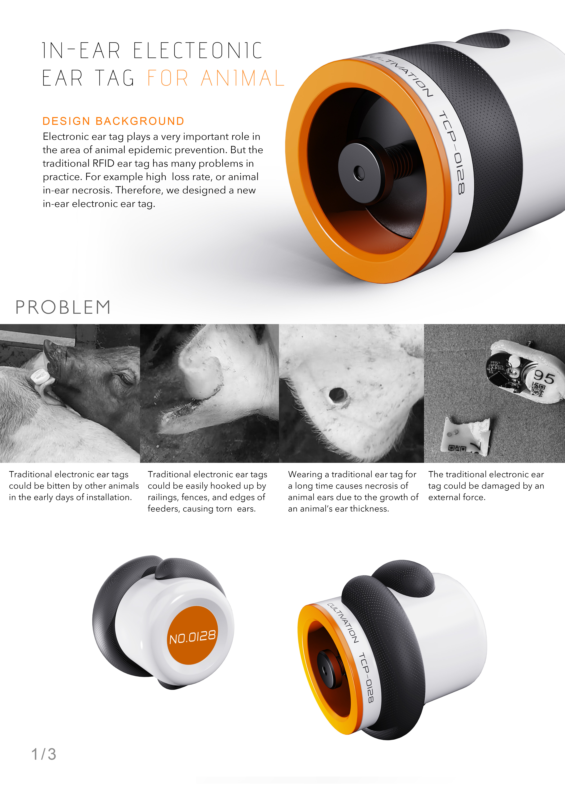
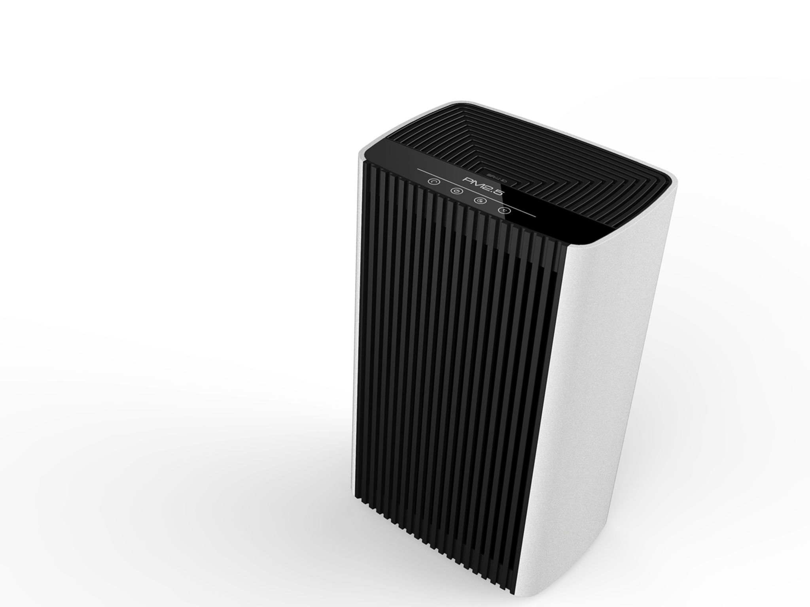
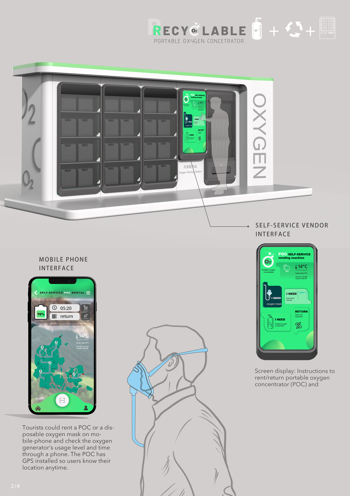
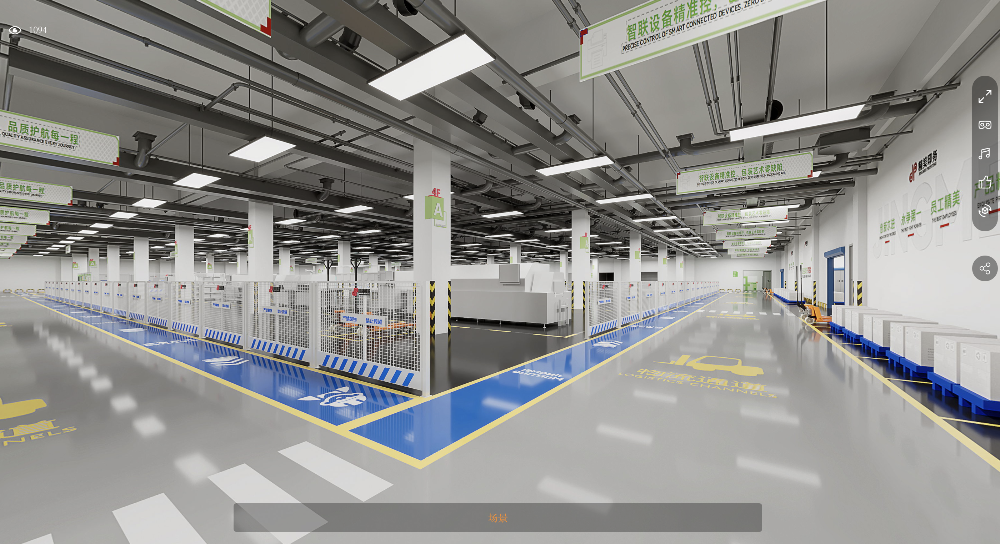
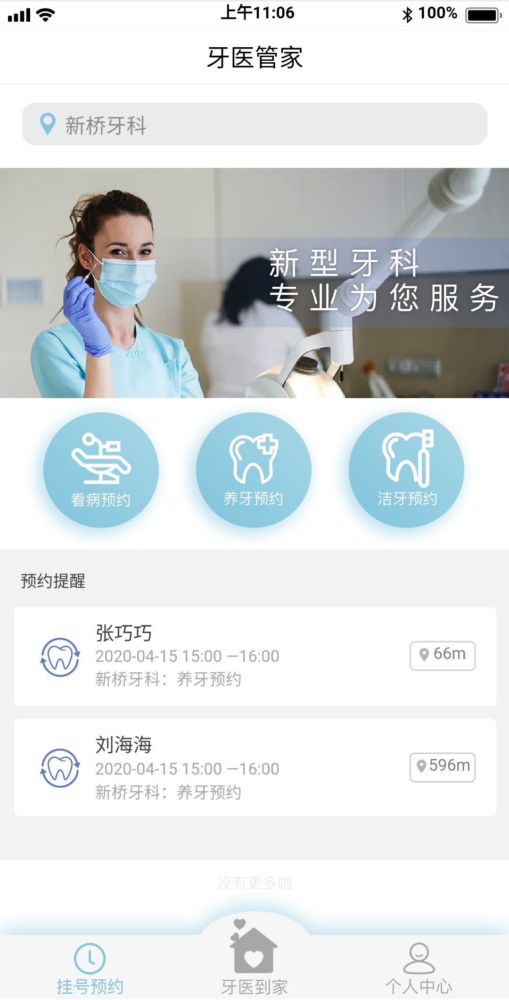

M.A. in Art and Design
Concentration in Product Design · Average mark: 86.5/100
Thesis: A Service-Oriented Approach to the Design of Convenience Facilities in Urban Communities.
Lecturer in Industrial Design
School of Digital Intelligence Design
Chengdu Technological University
Her work brings together interdisciplinary smart product design education and collaborative design practice, including spatial visualization planning for production facilities and AI-based packaging inspection equipment.
She also leads service design research, including a volunteer service platform for Tianfu international sports events.
Concentration in Product Design · Average mark: 86.5/100
Thesis: A Service-Oriented Approach to the Design of Convenience Facilities in Urban Communities.
Government-sponsored exchange programme.
GPA: 3.46/4.0 · Overall rank: 5/50. Recommended for postgraduate admission without entrance examination in 2013.
Thesis: Public Facilities Design: Design of an Intelligent City Information Inquiry Terminal.
Stakeholder research and human–robot interaction requirements for packaging inspection.
Service journeys, workflows and platform prototyping for Tianfu international sports events.
Field research in three Chengdu community settings and touchpoint-led redesign across culture, health, transport and commerce.
6 journal articles · 2 conference papers · 1 book chapter · 1 textbook
Proceedings of the 2023 Asia-Pacific Conference on Image Processing, Electronics and Computers (IPEC), pp. 269–273. IEEE.
DOI: 10.1109/IPEC57296.2023.00053 ↗In S. Raab & J. Li (Eds.), Dialogue through Education: Learning between Europe and China (pp. 70–75). tredition GmbH. ISBN 978-3-384-09989-1.
Aviation Industry Press. ISBN 978-7-5165-2921-8.
Textbook · Co-editor
Ergonomics · Smart Product Design · Design Psychology · Service Design.
Supervision of approximately seven undergraduate final-year projects and theses annually.
Bringing industrial design, automation and mechanical design together through industry-based briefs.

01电子耳标

02全自动智能空气净化器

03便携式制氧机自助租赁系统

04工厂虚拟仿真可视化

05牙医到家小程序高保真